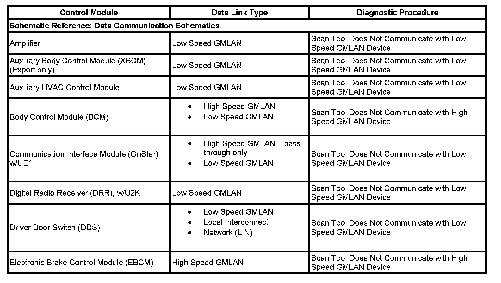

Data Link References
DATA LINK REFERENCES

This table identifies which serial data link that a particular module uses for in-vehicle data transmission. Some modules may use more than one data link to communicate. Some modules may have multiple communication circuits passing through them without actively communicating on that data link. This table is used to assist in correcting a communication malfunction. For the description and operation of these serial data communication circuits refer to Data Link Communications Description and Operation.